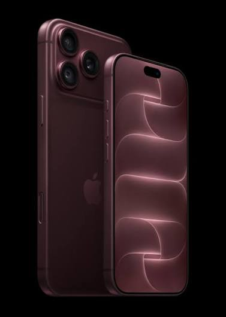

The iPhone 18 Pro and iPhone 18 Pro Max are smartphones developed and marketed by Apple. Alongside the iPhone Duo, they form the twentieth generation of the iPhone, succeeding the iPhone 17 Pro and iPhone 17 Pro Max. They were unveiled during the Apple Event at Apple Park in Cupertino, California, on September 9, 2026. The models were released on September 18, 2026.[6][7]
The iPhone 17 Pro and iPhone 17 Pro Max are smartphones developed and marketed by Apple. Alongside the iPhone 17 and iPhone Air, they form the nineteenth generation of the iPhone, succeeding the iPhone 16 Pro and iPhone 16 Pro Max. They were unveiled during the Apple Event at Apple Park in Cupertino, California, on September 9, 2025,[3] and released on September 19, 2025.[4] They were discontinued on September 9, 2026, following the announcement of the iPhone 18 Pro and iPhone 18 Pro Max.
The iPhone 16 Pro and iPhone 16 Pro Max are smartphones developed and marketed by Apple. Alongside the iPhone 16 and iPhone 16 Plus, they form the eighteenth generation of the iPhone, succeeding the iPhone 15 Pro and iPhone 15 Pro Max, and were announced on September 9, 2024, and released on September 20, 2024. The iPhone 16 Pro and iPhone 16 Pro Max include a larger 6.3-inch and 6.9-inch display, a faster processor, upgraded wide and ultra-wide cameras, support for Wi-Fi 7, larger batteries, and come pre-installed with iOS 18. They were discontinued on September 9, 2025, following the announcement of the iPhone 17 Pro and 17 Pro Max.[6]